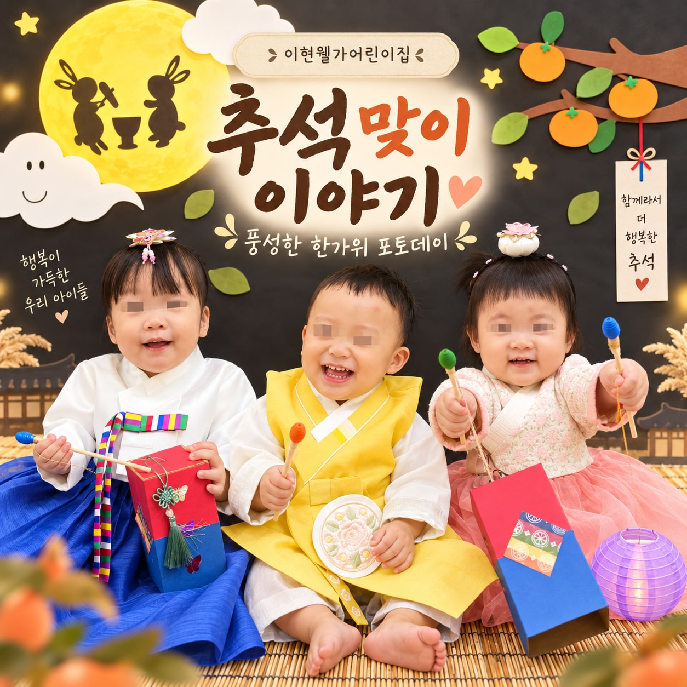

고운 한복을 입고 추석을 만나요
보름달과 감나무 포토존에서 우리 아이들과 즐거운 추석맞이 시간을 보냈어요. 알록달록한 한복을 입은 아이들의 모습이 한가위만큼이나 환하고 풍성했답니다.
전통 소품도 직접 만져보고 예쁜 한복 사진도 남기며, 아이들만의 속도로 명절의 분위기를 느껴보았어요. 작은 손으로 소품을 잡아 보고 친구와 나란히 앉아 웃는 순간들을 사진으로 담았습니다.
함께라서 더 행복한 한가위
아이들에게는 낯선 전통 소품도 새로운 놀이가 되고, 친구와 함께한 포토존은 즐거운 추억이 되었어요. 아이들의 호기심과 웃음이 가득했던 추석맞이 이야기를 블로그에서도 만나보세요.
네이버 블로그에서 더 보기